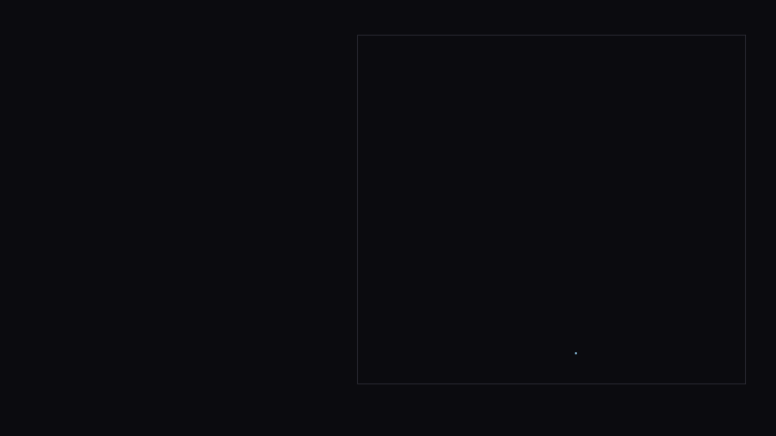
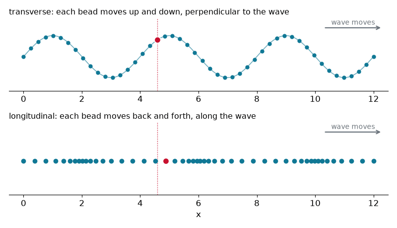
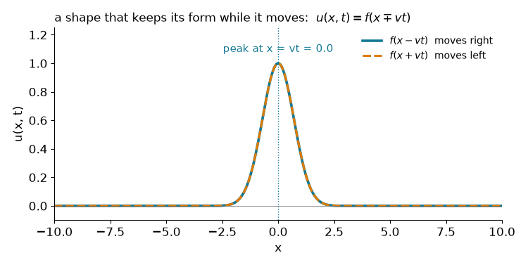
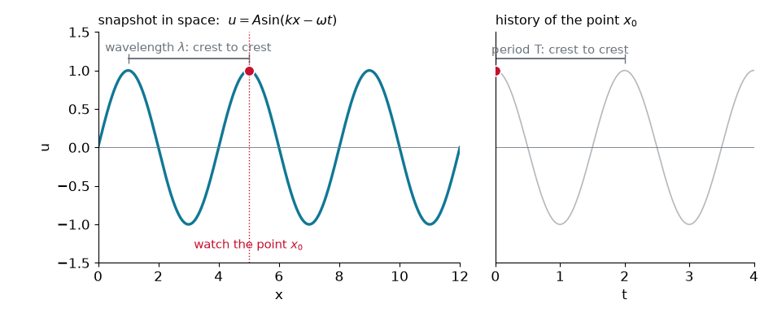
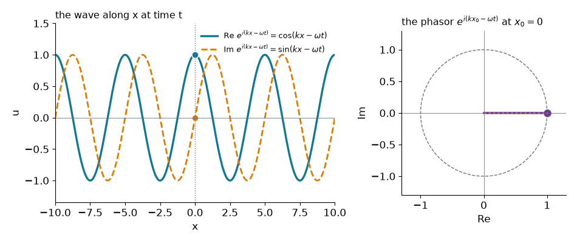
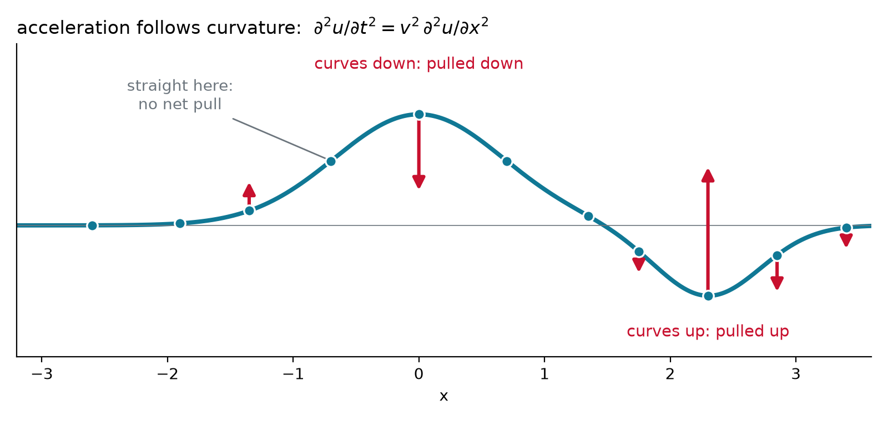
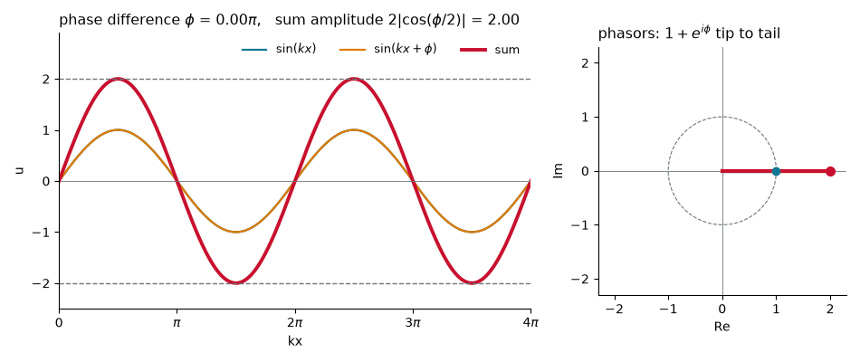
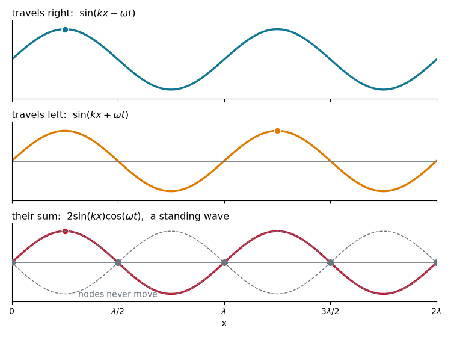
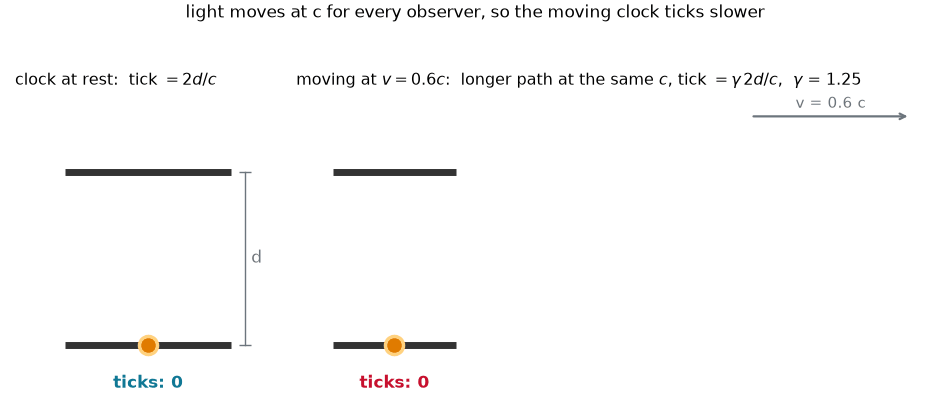

Chem 3240 · Lecture 2.1



u(x,t) = f(x') = f(x - vt)

u(x,t) = A\sin(kx - \omega t + \phi)
Repeats every \lambda in space and every T in time: k\lambda = 2\pi and \omega T = 2\pi
k = \frac{2\pi}{\lambda}
\omega = \frac{2\pi}{T} = 2\pi\nu
v = \frac{\omega}{k} = \lambda\nu

u(x,t) = Ae^{i(kx - \omega t)}
u(x,t) = Ae^{i(kx-\omega t)}
Two x-derivatives, two t-derivatives
\frac{\partial^2 u}{\partial x^2} = (ik)^2 u = -k^2 u, \qquad \frac{\partial^2 u}{\partial t^2} = (-i\omega)^2 u = -\omega^2 u
Divide and use \omega = kv: the ratio is k^2/\omega^2 = 1/v^2
\frac{\partial^2 u}{\partial x^2} = \frac{1}{v^2}\frac{\partial^2 u}{\partial t^2}

u(x,t) = \sin(2x - 10t + \pi/2) in SI units. Find A, \lambda, \nu, T, and v.
A = 1, \qquad k = 2\ \text{m}^{-1} \Rightarrow \lambda = \pi\ \text{m}, \qquad \omega = 10\ \text{s}^{-1} \Rightarrow \nu = \tfrac{5}{\pi}\ \text{Hz},\; T = \tfrac{\pi}{5}\ \text{s}
v = \frac{\omega}{k} = 5\ \text{m/s to the right}, \qquad \sin(\theta + \pi/2) = \cos\theta

\text{sum} = 2\cos\tfrac{\phi}{2}\; e^{i(\theta + \phi/2)}
wave 1 = \sin(kx), wave 2 = \sin(kx+\phi), sum with envelope 2\cos(\phi/2)
{
const xs = d3.range(0, 12.57, 0.03);
const series = (fn) => xs.map(x => ({x, y: fn(x)}));
return Plot.plot({
width: 1000, height: 360,
x: {label: "kx"},
y: {domain: [-2.2, 2.2], label: "u"},
marks: [
Plot.ruleY([0], {stroke: "#ccc"}),
Plot.line(series(x => Math.sin(x)), {x: "x", y: "y", stroke: "#107895", strokeWidth: 1.5}),
Plot.line(series(x => Math.sin(x + phi)), {x: "x", y: "y", stroke: "#e07b00", strokeWidth: 1.5}),
Plot.line(series(x => Math.sin(x) + Math.sin(x + phi)), {x: "x", y: "y", stroke: "#C8102E", strokeWidth: 2.5})
]
});
}
\sin(kx-\omega t) + \sin(kx+\omega t) = 2\sin(kx)\cos(\omega t)
\frac{\partial^2 E}{\partial x^2} = \frac{1}{c^2}\frac{\partial^2 E}{\partial t^2}, \qquad c = \frac{1}{\sqrt{\varepsilon_0\mu_0}}

\Delta t = \gamma\,\Delta t_0, \qquad \gamma = \frac{1}{\sqrt{1 - v^2/c^2}}
A wave is any shape f(x \mp vt). Sine waves carry k = 2\pi/\lambda and \omega = 2\pi\nu with v = \omega/k, every wave obeys u_{xx} = u_{tt}/v^2 because acceleration follows curvature, and since that equation is linear, waves add. Light is the one wave nobody can surf.
Chem 3240 · Quantum Mechanics